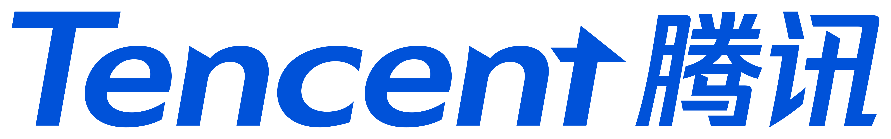

教育背景
深圳大学 · 计算机技术（硕士）
2024.09 – 2027.06
南昌航空大学 · 数据科学与大数据技术（本科）
2020.09 – 2024.06
- 本科：学业奖学金 4 次、国家励志奖学金 2 次、优秀毕业生、2023 计算机设计大赛国赛三等奖；
硕士：二等奖学金 2 次、参与中国南山集团合作项目
实习经历

—— CSIG 优图实验室 · 应用研究
2026.02 – 2026.08
课题一：代码生成 Agent 引擎（CodeForge）
场景：代码生成 Agent「澄清 → 规划 → 写代码 → 构建 → 部署」全流程落地，主要解决生成效率低、生成质量差两大难题。在「多级委托 → 单主 Agent」架构升级下，主导上下文管理与质量闭环的方案设计与落地。
- 单主 Agent 架构重构（提效）：通过全链路调用链与耗时剖析定位「多级委托」下跨 Agent 上下文丢失、子 Agent 重复探索脚手架、token 预算撞墙三大瓶颈，重构为「单主 Agent + 按需子代理」，规划/实现/验证收敛为一人执行，子代理降级为工具且禁止递归派生，从根源消除上下文传递损耗。
- 三级上下文压缩（提效）：主导实现「历史裁剪 + 工具结果零成本摘要 + 长会话阈值 LLM 摘要」三级上下文压缩，统一 token 预算。
- 质量反思闭环（提质）：针对「编译通过但运行异常」的典型失效，主导实现「构建校验 → 渲染断言 → 交互回归 → 修复验证」闭环，输出结构化缺陷诊断驱动 LLM 定向修复，并以硬性恢复判定拦截「假交付」。
- 可量化评估体系：与业务共同设计 20+ 场景端到端用例，建立生成时长、一次构建通过率、需求达成率、缺陷率等度量指标，支撑「评测 → 定位 → 修复」迭代。
成果：生成时长 8→5 分钟（-38%）；缺陷率 29.5%→17.1%（-42%）、需求达成率 88%→96.4%、一次构建通过率 84.4%→88.6%。
课题二：多模态大模型人类意图理解后训练框架（EVIDE）｜AAAI 2027 在投（一作）· 专利已申请
场景：智能客服/心理的咨询多为「视频+音频」，用户真实意图往往藏在表情、语气等副语言线索里——例如「嘴上答应、表情却犹豫」这类需要跨模态细粒度判断的情形。现有 Omni 模型面对两大痛点：标注成本高（手工标注CoT、离线蒸馏）与模态信息损失（易退化为只抓单一显著模态的捷径）。针对此，将隐式 CoT 重构为显式证据解耦推理链，强迫模型先分别提取视听证据、再跨模态融合推理。
- EDSD 证据分解自蒸馏：特权教师-学生 on-policy 自蒸馏，教师条件于参考答案注入证据，学生对齐其 token 级分布，实现零标注成本；以对称 Generalized-JSD 替代 KL 抑制长度爆炸，指数位置衰减聚焦早期证据 token。
- MIRL 模态重要性强化学习：在 GRPO 上引入反事实模态消融估计各模态的因果贡献，据此分配优势信号——正样本 rollout 强化关键模态、负样本 rollout 惩罚导致错误的模态，避免单一显著模态支配奖励、跨模态线索被忽略。
- 训练工程：基于 Open-R1/TRL 二次开发多模态 GRPO 训练器，独立实现 token-local advantage（证据段级优势重分配）；DeepSpeed ZeRO-3 分布式训练，LoRA 仅解冻 LLM 主干、冻结视听编码器。
成果：在 HumanSense 基准上，EVIDE-30B 较 Qwen-Omni 基线准确率 +6.9%、EVIDE-7B +11.5% 且追平 30B，IntentBench 跨基准 +7.3%；MIRL 不引入可训练参数或额外反向传播，仅增加两次推理前向（+5%~8%）。
项目经历
多路混合检索与知识图谱驱动的研发知识检索平台 · 独立开发
2025.12 – 2026.01
简介：独立开发的通用研发知识检索平台，以学术论文（arXiv为落地场景，覆盖「文档入库→多路检索→意图理解→模型生成→溯源反馈」完整链路，通过四通道并行召回 + RRF 融合、两级精读与 ReAct 编排实现带溯源回答的端到端闭环。
- 多路混合检索：向量（Milvus）、关键词（ES BM25）、知识图谱（LightRAG）、联网搜索四通道并行召回，RRF 融合 + Rerank 精排，支持引用链多跳推理；并设计「abstract 全局召回 + 按需拉取 arXiv 全文」两级精读（仅索引摘要，单篇成本约 0.2KB）。自建 50 个测试场景，Recall@10 88.6%、MRR 0.72，融合较单路提升 12.3%。
- 问题理解与意图路由：Query 改写 + 多问题分解，LLM 打分 + 树形意图识别，设计「KB 召回节点 + MCP 精读节点」两级意图联动路由；将第一级命中摘要（含 arxiv_id）注入第二级 MCP 参数提取，由 LLM 自动抽取论文编号驱动全文拉取，免去人工指定编号。Top-1 准确率 92.5%；
- 模型工程化与 Agent 编排：基于 Java + Spring Boot 搭建服务端（MyBatis-Plus 持久层、Redis 缓存、RocketMQ 异步入库），抽象多供应商 Chat/Embedding/Rerank 统一客户端，多候选路由 + 熔断降级，流式首包 P50 1.8s；MCP 对接 Semantic Scholar，ReAct 编排生成带逐句引用的文献综述。
专业技能
- 熟悉 Python、PyTorch，掌握 SFT / GRPO / RLHF 等大模型后训练范式，熟悉 LoRA、DeepSpeed ZeRO-3 分布式训练与多模态微调
- 熟悉 LangChain、LangGraph 等大模型应用开发框架，掌握 上下文管理、记忆存储、工具调用（MCP） 与 token 预算控制，熟悉 ReAct、多智能体协作 等 Agent 编排范式
- 熟悉 RAG 完整链路，掌握 语义分块、向量/关键词/知识图谱多路召回、RRF 融合与重排序 策略，熟悉 Milvus 向量数据库
- 熟悉 MySQL 数据库的使用，对索引、锁机制、事务、日志有一定理解
- 熟悉 Redis 的使用，熟悉五种常见数据类型，对缓存持久化、缓存穿透、缓存击穿有一定理解
- 熟悉 Linux 系统及常用命令的使用，熟练使用 Git 进行版本管理与团队协作，对 Docker 有一定理解